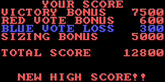

After finalizing your districts, should you win the election, you will then receive a score to measure just how well you did.

The scoring is divided into 4 categories. First is your victory bonus, where you receive 2500 points per district won. Second is the red vote bonus, where you receive 1 point per red voter in each winning district. Third is the blue vote penalty where you lose 1 point per blue voter in each losing district. Lastly is the sizing bonus where you can receive additional points for keeping the sizes of districts as close to equal as possible for up to 5000 bonus points.